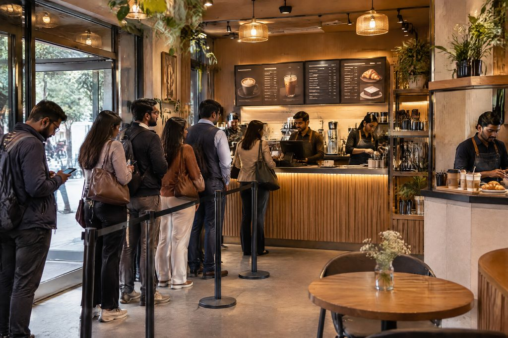
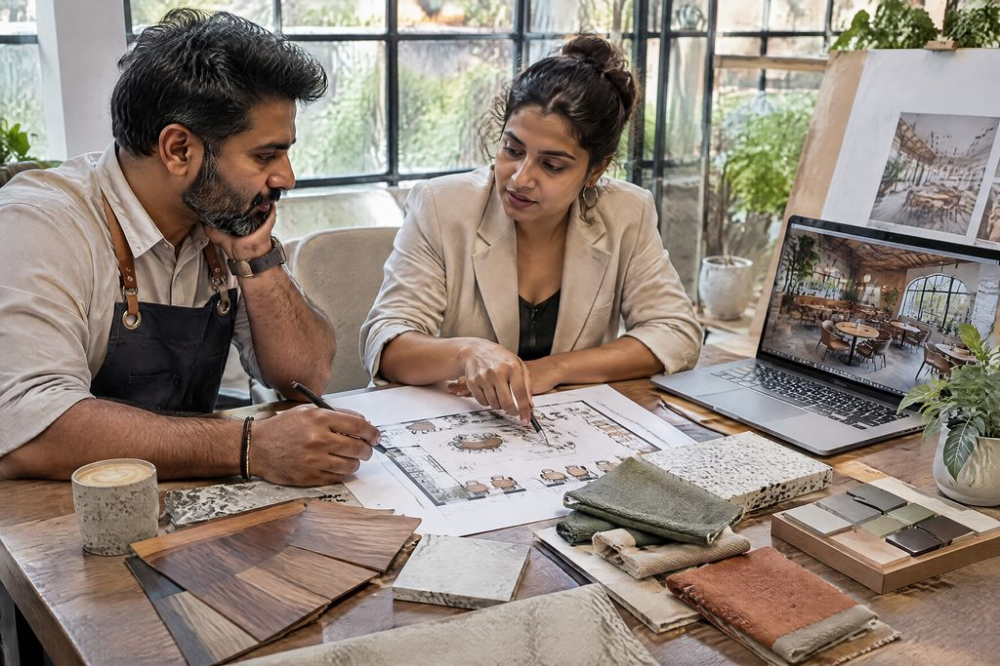
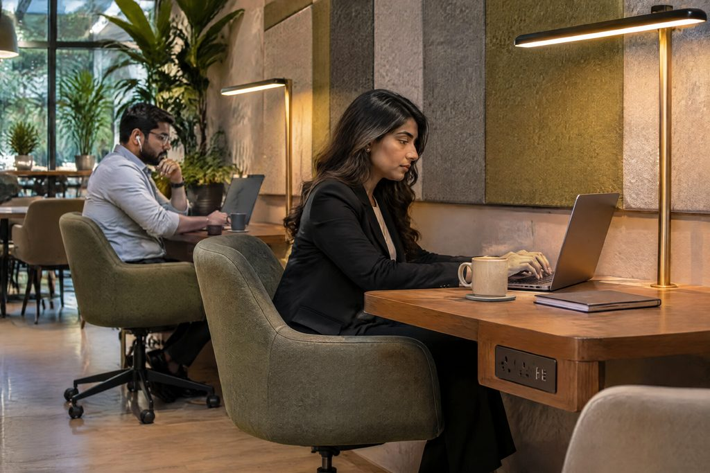

Delhi’s café scene has moved far beyond the quick coffee stop. From Connaught Place and Khan Market to Hauz Khas, Greater Kailash, Cyber Hub and Noida’s Sector 18, cafés now double as offices, meeting rooms, date spots and weekend destinations. In that market, the interior is often what decides whether a café becomes a regular haunt or just another option.
Choosing the right café interior designer in Delhi NCR is therefore one of the biggest decisions you will make before opening. This guide gives you a shortlist of café interior design firms working in Delhi NCR, grouped by what each does best, plus the questions, checks and Delhi-specific factors that will help you pick the right partner for your concept.
Key takeaways
- Pick a designer for your format first: a quick-service coffee bar, a laptop-friendly café and a destination café need different strengths.
- The best café designers ask about your service flow before your mood board.
- Delhi NCR adds its own brief: heat, dust and air quality, mall versus high-street rules, and very different neighbourhood crowds.
- Compare firms on F&B experience, MEP and kitchen planning, cost control and who actually builds, not on renders alone.
- Design-and-build teams can shorten the time you pay rent on an empty site. SprintCo’s FlatPack builds take 50% less time than a traditional build.
Why Café Interior Design Matters So Much in Delhi NCR
A Delhi café has to handle very different crowds through the day: office-goers on a morning coffee run, freelancers who stay for three hours, families on a Sunday afternoon and groups who arrive at 9 pm. The right designer understands plug-point placement as well as they understand aesthetics. They plan for the morning rush and the afternoon laptop session, and they create photo-worthy corners that do not sacrifice comfort.

Café Interior Designers in Delhi NCR: A 2026 Shortlist
The firms below are grouped by the kind of café project they suit best. Descriptions are based on each firm’s publicly shared café work and positioning. We are one of the firms on this list, so please review every portfolio yourself and speak to past clients before you decide.
For brand-focused, Instagram-ready cafés
Purple Studio. A Delhi NCR studio known for compact, vibrant café interiors with confident use of colour, textured surfaces and clear zoning. A good fit if your brand personality needs to come through strongly in a small space.
Interiors by AD (ADgraphi Interior). Creates bespoke café interiors with strong brand narratives and a modern, clean-lined approach. Their work spans intimate coffee bars to larger dining formats.
RA Creative Designs. A Noida-based team whose café work leans on storytelling, warm materials and cosy seating that feels true to the concept.
For high-footfall, operationally smart cafés
SprintCo. A design-and-build agency that works only on F&B spaces: restaurants, cafés, bars, QSRs and kiosks. In Delhi NCR, our work includes Dolce Cafe, New Delhi, Bakingo, Delhi, Dosa Coffee, New Delhi, Half Light Coffee Roasters, Gurugram and Social, Faridabad. One team handles concept, space planning, branding, kitchen and MEP design, and build, and our FlatPack modular builds take 50% less time than a traditional build. Best suited to owners who want one accountable partner from first sketch to opening day, and to brands planning more than one outlet.
Nail and Hammer. Experienced in contemporary café and restaurant interiors built for real-world traffic, with strengths in circulation planning and earthy material palettes that hold up during busy service.
Reecan Interiors. A hospitality-focused firm whose detail-rich, atmosphere-led work puts lighting and seating comfort first, with experience across premium and mid-range budgets.
For full-service, concept-to-completion support
MM Design Studio. Offers end-to-end support from concept and 3D design to sourcing and site supervision. Their café projects show bold themes, layered lighting and careful back-of-house planning.
Kriaan Enterprises. Goes beyond interiors into F&B concept, theme development and business planning. Useful for first-time café founders who want positioning support alongside design.
For neighbourhood cafés and straightforward projects
Shally Interior Designer. Works across North Delhi with a focus on comfort and clarity: sensible space planning, clean lines and warm lighting that suit neighbourhood cafés, bakeries and family-friendly formats.
For design-led, premium concepts
Logic Design + Build. Brings an architectural approach to café projects, with an emphasis on spatial clarity, crafted details and refined materials. Best for brands targeting a design-conscious audience.
Which Type of Café Designer Do You Need?
| Your café concept | Look for a designer who is strong in |
|---|---|
| Quick-service coffee bar or kiosk | Counter workflow, queue and pickup planning, compact storage, brand visibility from a distance |
| Work-friendly specialty café | Seating ergonomics, power and Wi-Fi planning, acoustics, glare-free lighting |
| Destination or all-day café | Brand storytelling, feature design, day-to-night lighting, kitchen and MEP coordination |
| Bakery or dessert café | Display counters, product lighting, cold-chain equipment, photo-friendly finishes |
| Multi-outlet café brand | Rollout systems, standard details, procurement, predictable build timelines |
How to Choose the Right Café Interior Designer in Delhi
Before you shortlist, get clear on these six things.
- Your café concept. Quick-service coffee bar, work-friendly café or experience destination? Each needs different design thinking.
- Your location. High street, mall, office complex or neighbourhood corner. Each has different footfall patterns, rules and visibility needs.
- Your involvement. Do you want hands-on collaboration or to hand over the keys to one team?
- Your budget. Some firms are best at stretching a lean budget, others at premium execution. Our café interior design cost per sq ft guide explains what drives the number.
- Your timeline. Every month on an empty site is rent with no revenue. Ask for a written programme, not a verbal promise.
- Your operations. Make sure the designer understands F&B workflows, kitchens and MEP, not just finishes.

10 questions to ask a café designer before you sign
- Which cafés have you designed, and can I visit one or speak to the owner?
- Who on your team will lead my project day to day?
- How will you plan the barista workflow and the queue at peak hour?
- Do you handle kitchen, electrical, plumbing, HVAC and fire design, or do I need separate consultants?
- Who builds it: your own team, a partner contractor, or a contractor I appoint?
- How many design options and revisions are included?
- Will I get a detailed bill of quantities before work starts?
- What is the written programme from design sign-off to handover?
- How do you manage mall approvals and fit-out guidelines?
- What happens after handover if something fails?
For a deeper checklist, read our guide on how to choose a restaurant interior design company, which includes a downloadable comparison scorecard. Our explainer on the bill of quantities will help you compare quotes like for like.
Red flags to watch for
- A portfolio of homes and offices with only one or two F&B projects
- Beautiful renders but no layout, MEP or kitchen drawings
- A quote with lump sums instead of itemised quantities
- No clear answer on who supervises the site
- Timelines that are only ever discussed verbally
What Delhi NCR Cafés Need From Their Interiors
Delhi NCR brings its own conditions that a good café designer should plan for from day one.
- Heat, dust and air quality. Long summers and smoggy winters make HVAC sizing, fresh-air planning, filtration and an entrance that holds conditioned air (a vestibule or air curtain) essential, not optional.
- Durable, easy-clean finishes. Dust and heavy footfall wear finishes quickly. Commercial-grade surfaces and sealed natural materials keep the café looking new for longer.
- Neighbourhood differences. A café near Connaught Place or Cyber Hub serves office-goers who need speed and plug points. Hauz Khas and Majnu ka Tilla skew young and social. Greater Kailash, Khan Market and Vasant Vihar lean towards families and premium spend. Your seating mix and lighting should follow your crowd.
- Mall versus high street. Malls in Saket, Vasant Kunj, Gurugram and Noida usually have their own fit-out guidelines, approval steps and restricted working hours. A designer who has delivered mall projects will plan around them.
- Bold, social energy. Delhi guests respond well to statement design and social spaces, but the strongest cafés balance one or two signature moments with comfortable, practical seating.

The Design Essentials Every Good Café Designer Should Cover
- Zoning and flow: entry, ordering, pickup, seating, service stations and back of house planned so nothing collides at peak hour.
- Layered lighting: ambient, task and accent lighting that works for breakfast, laptop hours and evenings.
- Furniture strategy: seating that matches your business model, whether that means fast turnover or long, comfortable stays.
- Material palette: finishes that express your brand and survive daily F&B use.
- Acoustics: ceilings, walls and soft furnishings that keep conversation comfortable when the room is full.
- Kitchen and MEP: equipment layout, drainage, exhaust, electrical load and fire safety coordinated with the design, not added later.
Want to see what is shaping café interiors this year? Read our guide to coffee shop design trends for 2026.
Final Thought
Every successful café in Delhi shares one thing: interiors designed with both heart and head. The places that become a second home balance beautiful details with acoustic comfort, photo-worthy corners with elbow room, and warm ambient light with enough brightness to actually work.
Choose a designer who asks about your operational flow before they talk about mood boards.
If you are planning a café in Delhi, Gurugram, Noida or Faridabad, see our work as restaurant interior designers in Delhi NCR and in Gurugram, or book a free café design consultation with our team.
Frequently Asked Questions
Who are the best café interior designers in Delhi NCR?
Well-known café interior design firms working in Delhi NCR include Purple Studio, Interiors by AD, RA Creative Designs, SprintCo, Nail and Hammer, Reecan Interiors, MM Design Studio, Kriaan Enterprises, Shally Interior Designer and Logic Design + Build. The best choice depends on your format, budget, timeline and how much of the build you want one team to handle.
How do I choose a café interior designer in Delhi?
Start with your concept, location, budget and timeline. Then compare firms on real F&B projects you can visit, kitchen and MEP capability, who builds the space, an itemised bill of quantities and a written programme. Choose the designer who asks about your service flow before showing mood boards.
How much does café interior design cost in Delhi NCR?
There is no fixed rate. Cost depends on size, location, concept, materials, furniture, lighting, kitchen equipment and the level of customisation. Ask every shortlisted firm for an itemised bill of quantities so you can compare like for like, and see SprintCo's café cost per sq ft guide for the main cost drivers.
How long does it take to design and build a café in Delhi?
Timelines depend on size, approvals, mall rules and how much is custom-made. Design-and-build teams usually move faster because design, procurement and site work overlap. SprintCo's FlatPack modular builds take 50% less time than a traditional build, which reduces the months you pay rent on an empty site.
Should I hire a design-and-build firm or separate designer and contractor?
A separate designer and contractor gives you more control but more coordination, and gaps between drawings and site work are common. A design-and-build firm gives you one point of accountability, one budget and one timeline, which suits owners who are busy running a business or opening more than one outlet.
What should a Delhi café interior plan for that cafés elsewhere might not?
Plan for long hot summers and dusty, smoggy winters with properly sized HVAC, fresh-air filtration and an entrance that holds conditioned air. Choose durable, easy-clean finishes, match the seating mix to your neighbourhood crowd, and allow for mall fit-out guidelines and restricted working hours if you are in a mall.
Does SprintCo design cafés in Gurugram and Noida as well as Delhi?
Yes. SprintCo designs and builds cafés, restaurants, bars and QSRs across Delhi NCR, including Delhi, Gurugram, Noida and Faridabad. Projects in the region include Dolce Cafe and Dosa Coffee in New Delhi, Bakingo in Delhi, Half Light Coffee Roasters in Gurugram and Social in Faridabad.